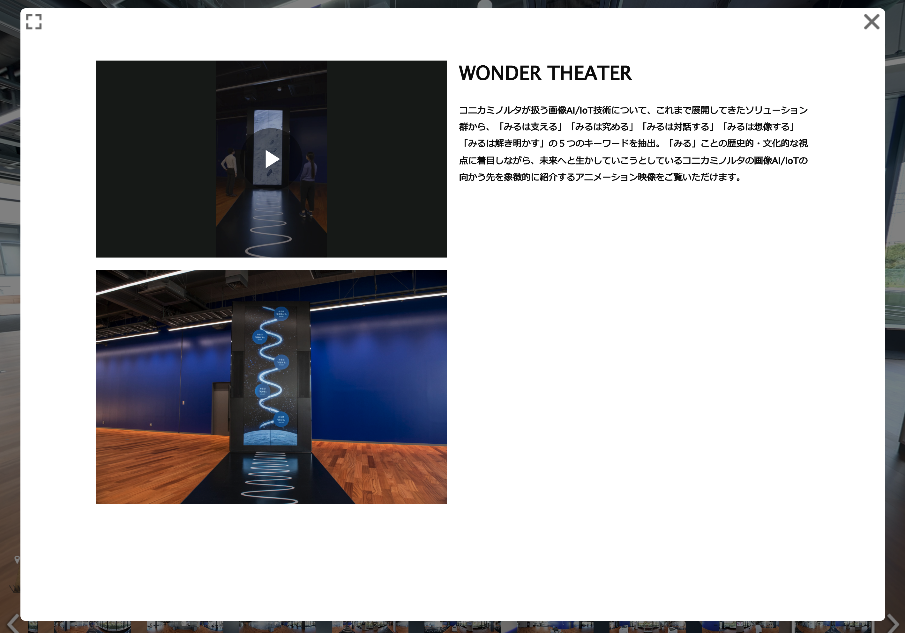
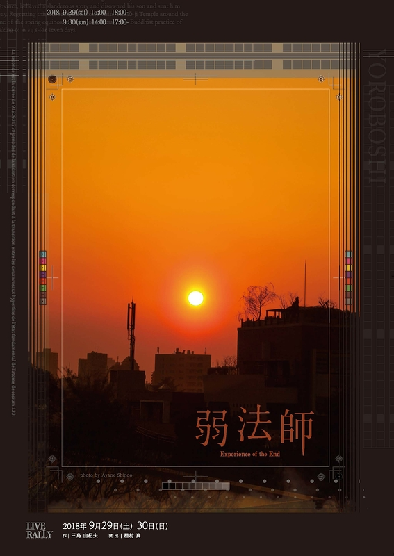
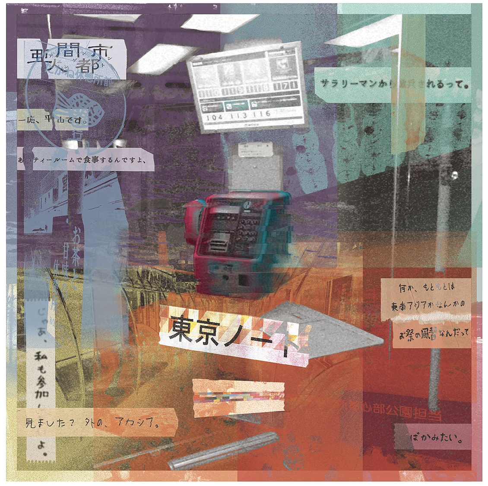
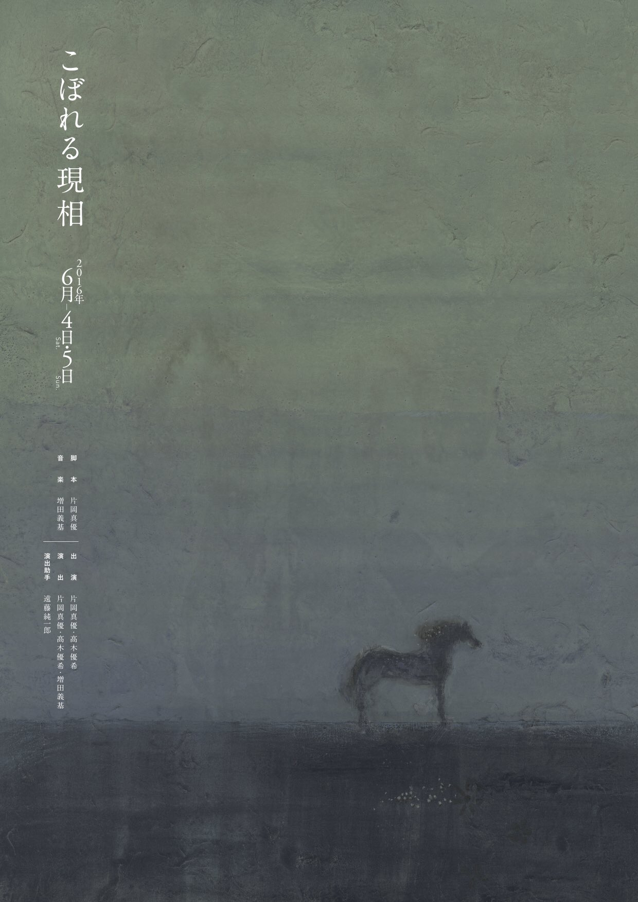

Works
Compose | Sound Design
Mr.children『Documentary film』 animation part
CONICA MINOLTA Innovation Garden OSAKA『Wonder Wall』
かさねぎリストバンド『踊れる』
ArtView Official CM
TSUBURAYA ULTRAMAN『かいじゅうのすみか』展 モルフォ蝶
TSUBURAYA ULTRAMAN『かいじゅうのすみか』展 ピグモン
TSUBURAYA ULTRAMAN『かいじゅうのすみか』展 レッドキング
大岩雄典 『わかれ話』
かさねぎリストバンド『絶滅種の側から』
屋上 『都市の土着料理』
かさねぎリストバンド『夏のうた』
Today at Apple 銀座『Logic Pro Xを用いたフルートのためのライブエレクトロニクス』
Recording
Ursonate - Kurt Schwitters
大岩雄典 『Vacance』
中川絢音（水中めがね∞）✕山道弥栄『うつをみ』
Audio Engineering
teamLab 生命は闇の中に呼応する光 / Life is the Light that Resonates in the Dark
 A3!展
A3!展
植村真『無人演劇祭』
アークヒルズ さくらまつり 2019 Fujitsu出展ブース サウンドシステムプログラミング
PA
増田セバスチャン『Fantastic Voyage』
坂本光太リサイタル『V・グロボカール作 変わらない1日』
ハチス企画『まさに世界の終わり』
亜人間都市『鳥類学フィールドノート』
LIVE RALLY『弱法師』
亜人間都市『東京ノート』
こぼれる現相
 LIVE RALLY『盲人書簡2020』
LIVE RALLY『盲人書簡2020』